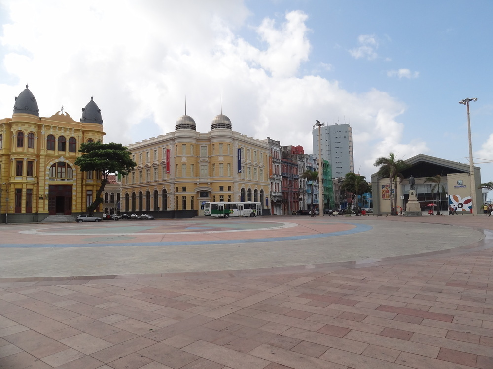

Marco Zero - Recife

O Marco Zero de Recife é um local icônico situado no Bairro do Recife, região central da capital pernambucana, no Brasil. Este ponto histórico marca o início da contagem das distâncias rodoviárias a partir da capital pernambucana, sendo também um símbolo da rica história e cultura da cidade.
No coração do Recife Antigo, o Marco Zero é caracterizado por uma rosa dos ventos no chão, um grande obelisco e a imponente escultura do artista plástico Francisco Brennand. A escultura, conhecida como "A Torre", é uma representação estilizada de uma flor e se destaca como uma peça central no cenário arquitetônico da região.
Porque visitar o Marco Zero de Recife:
Visitar o Marco Zero é uma experiência enriquecedora para aqueles que desejam explorar a história e a cultura de Recife. Além da oportunidade de contemplar a beleza da escultura de Brennand e a rosa dos ventos, o local oferece uma vista panorâmica do Rio Capibaribe, com suas águas calmas e as coloridas embarcações conhecidas como "barcos de passeio".
O entorno do Marco Zero é repleto de atrações culturais, restaurantes, bares e centros culturais, tornando-o um ponto de partida ideal para explorar as raízes históricas da cidade. Durante a noite, a região ganha vida com apresentações culturais, criando uma atmosfera vibrante e acolhedora.

Preço estimado de viagem de avião e pousada:
Os preços de viagem de avião e acomodação em Recife podem variar dependendo da época do ano, disponibilidade e preferências individuais. Em geral, Recife é servida por um aeroporto internacional, o Aeroporto Internacional do Recife/Guararapes - Gilberto Freyre (REC). Os custos de passagens aéreas podem variar, mas é aconselhável pesquisar e reservar com antecedência para obter as melhores tarifas.
Quanto à hospedagem, Recife oferece uma ampla gama de opções, desde hotéis luxuosos até pousadas charmosas no centro histórico. Os preços variam de acordo com a localização e as comodidades oferecidas. Em média, o custo diário de uma pousada ou hotel pode variar de R$ 150 a R$ 500, dependendo das escolhas de acomodação.
Em resumo, visitar o Marco Zero de Recife não apenas proporciona uma imersão na história e cultura da cidade, mas também oferece a oportunidade de explorar uma região rica em entretenimento e gastronomia. Os custos de viagem podem ser gerenciados com planejamento antecipado, permitindo que os visitantes desfrutem plenamente dessa experiência única no Nordeste brasileiro.

Você também pode gostar:
Conheça também sobre o Passo do Frevo e Rua do Bom Jesus